Last time in the Sirius blog post series, you learned how to create an artificial container, today we will see how to create an infinite hierarchy of containers.
As an example we will represent the different dream levels featured in Inception :
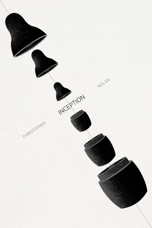
We need to model dream levels and that levels can refer to other sub levels :
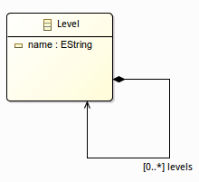
We develop a first Flat representation to show all the levels at the same stage :
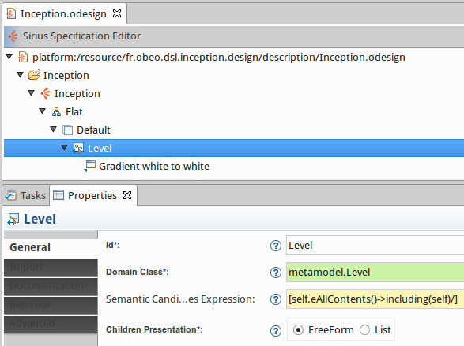
A Flat diagram is created and a Level container is defined to represent all the levels defined in the model :
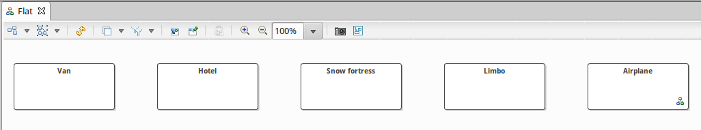
Thanks to this representation we see all the different dreams but it is not possible to understand how they are interlinked.
Next step we create a SubLevel diagram to represent the first three dream levels :
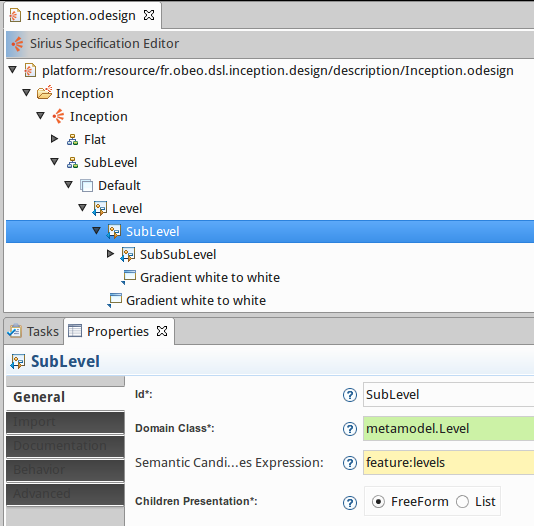
A first container Level represents the reality, then we represent the second dream level thanks to the SubLevel container and finally the third level with another container named SubSubLevel.
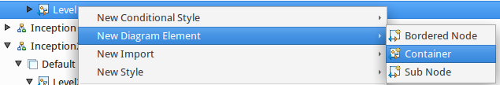
For each container we retrieve the child level thanks to the levels feature defined in the metamodel. For each level container we define a new style.
The following SubLevel diagram results:
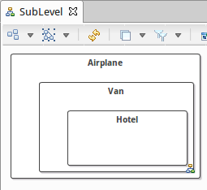
Defining for each level a new mapping and a new style is really painful and it determines the number of levels you can create. Fortunately, Sirius can help us to define an infinite hierarchy of elements.
We create a new Inception diagram as we did before, we define again a Level container to represent the initial level and then a SubLevel mapping models the second level.
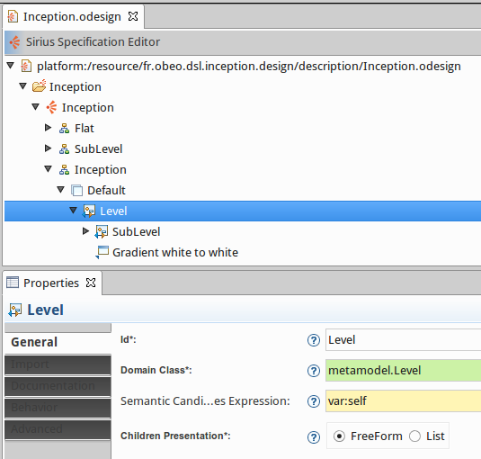
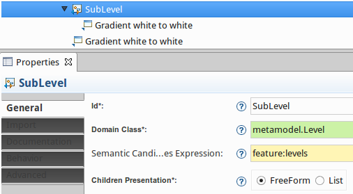
At this point we are able to represent only the first two levels. To get an infinite hierarchy of levels, we need to set in the Import tab, the Reused Container Mappings field and select the SubLevel mapping. This means that the SubLevel mapping could define as descendant other SubLevel mappings. Here we reuse a mapping defined elsewhere in the VSM using the Reused Mappings property in the Import category. The effect at runtime is the same as if you had created an equivalent mapping inside the parent mapping.
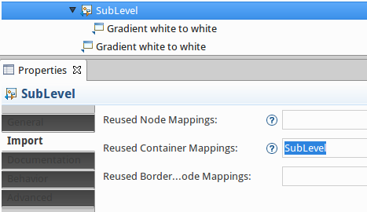
We create a new Inception diagram and...It’s working like a dream! We see all the levels hierarchy.
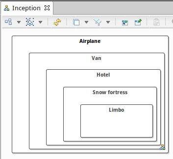
Pay attention, as this method uses recursion, if you set the semantic candidates expression to eAllContents a stack overflow exception will occur.
Last point, using this method we need to define the style for the first level and then we set the same style values to the sublevel mapping in order that all the levels appears with the same look.
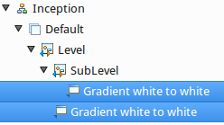
With Sirius you can define the level style just once.
A last Inception2 diagram is defined, with a Level2 mapping which is an exact copy of the previous Level mapping. We define also a style for this mapping.
Then instead of creating a New Diagram Element as we did in the previous diagram definition, this time we create a New Import Element.
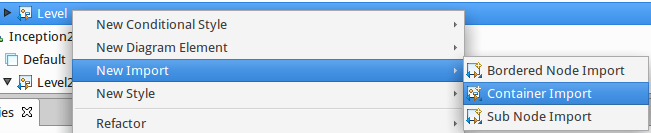
The Semantic Candidates Expression is set to feature:levels
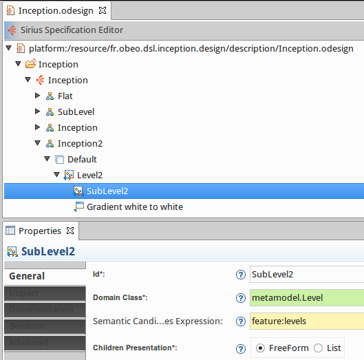
And in the Import tab, we set the Imported Mapping to Level2. This means that this new mapping reuses the style defined by the imported mapping.
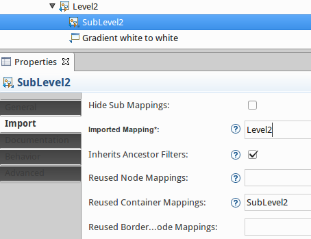
The mapping imports are used to specialize an already defined mapping. In our example we override the Semantic Candidates Expression.
To get an infinite hierarchy of levels, we set again the Reused Container Mapping field to SubLevel2.
Then in this diagram definition the level style is defined just once:
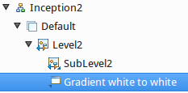
If we create an Inception2 diagram we obtain exactly the same result as before :
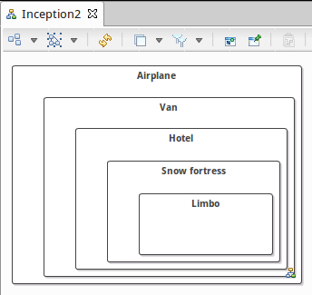
With Sirius, make your dreaming designer come true!
The sample code from this example is available on github: https://github.com/mbats/sirius-blog/tree/master/reimport